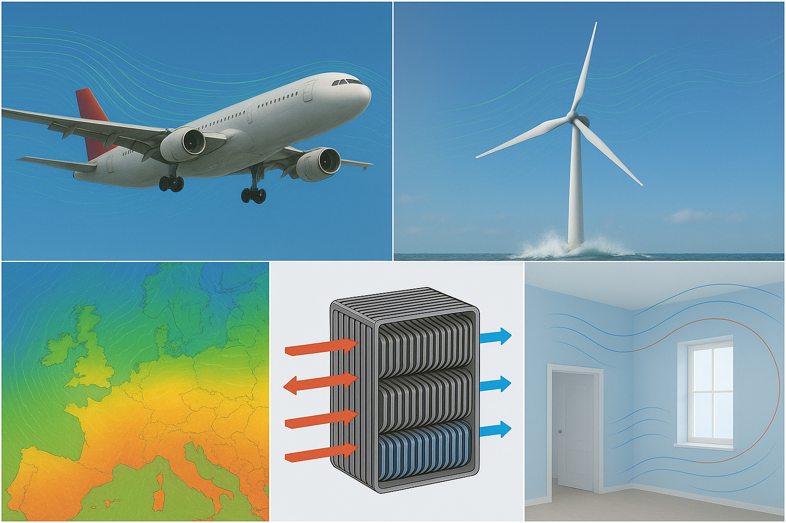

Fluid Mechanics Course
The Navier-Stokes Equations
Lecturer: Jacob Andersen
Slides by Asst. Prof. Jacob Andersen (AAU BUILD) and Assoc. Prof. Jakob Hærvig (AAU ENERGY)
Introduction to the Navier-Stokes Equations
Any experience with the Navier-Stokes Equations?
What are they?
Popularly: Very general set of equations describing almost any flow of fluids
- Vast span of applications 
What makes them special?
- Recall: Potential flow theory
- Inviscid, irrotational, incompressible flow
- The most general form of the Navier-Stokes equations
- Viscid, rotational, compressible flow
- Huge impact on the complexity of the flow → Turbulence
Flow over stalled airfoil
- Note: Incompressibility is still a very accurate assumption used in most engineering applications
Richard Feynman on Turbulence
Turbulence is the most important unsolved problem of classical physics
Eames & Flor (2011)
There is a physical problem that is common to many fields, that is very old, and that has not been solved. It is not the problem of finding new fundamental particles, but something left over from a long time ago—over a hundred years. Nobody in physics has really been able to analyze it mathematically satisfactorily in spite of its importance to the sister sciences. It is the analysis of circulating or turbulent fluids.
Feynman et al. (1965)
A Millennium Problem
The Clay Mathematics Institute has identified the existence and smoothness of solutions to the Navier-Stokes equations as one of the seven Millennium Prize Problems.
-
Sketch of the Problem
Prove or give a counter-example that in 3-D, solutions to the incompressible Navier-Stokes equations always exist and are smooth for all time.
Fefferman (2022) -
Prize
$1,000,000 for a correct solution.
We Are Engineers - Why This Lecture?
The Navier-Stokes equations describes some very complex physics not fully understood and their mathematical properties are still being investigated by mathematicians
- This is a course for engineering programmes
- We need to able to reach results and within a reasonable time frame
- So, why this lecture?
- Combined with modern computer power the Navier-Stokes equations
- Allows for detailed analysis of virtually all flows of engineering interest
- Are great for investigation of novel concepts — given their generality
- Are often the basis of faster, more simple design frameworks
- Understanding the underlying physics of the Navier-Stokes equations is key to applying them meaningfully
Engineering Applications
Examples of Engineering Applications based on Navier-Stokes solvers (CFD):


Learning Goals
Learning Goals
Knowledge
- Must have knowledge about stresses in fluids, equation of motion, constitutive models and Navier-Stokes equations.
Skills
- Must be able to describe assumptions and limitations of mathematical models for different types of flows.
- Must be able to apply analytical and semi-empirical methods for mathematical description of fluid dynamic problems.